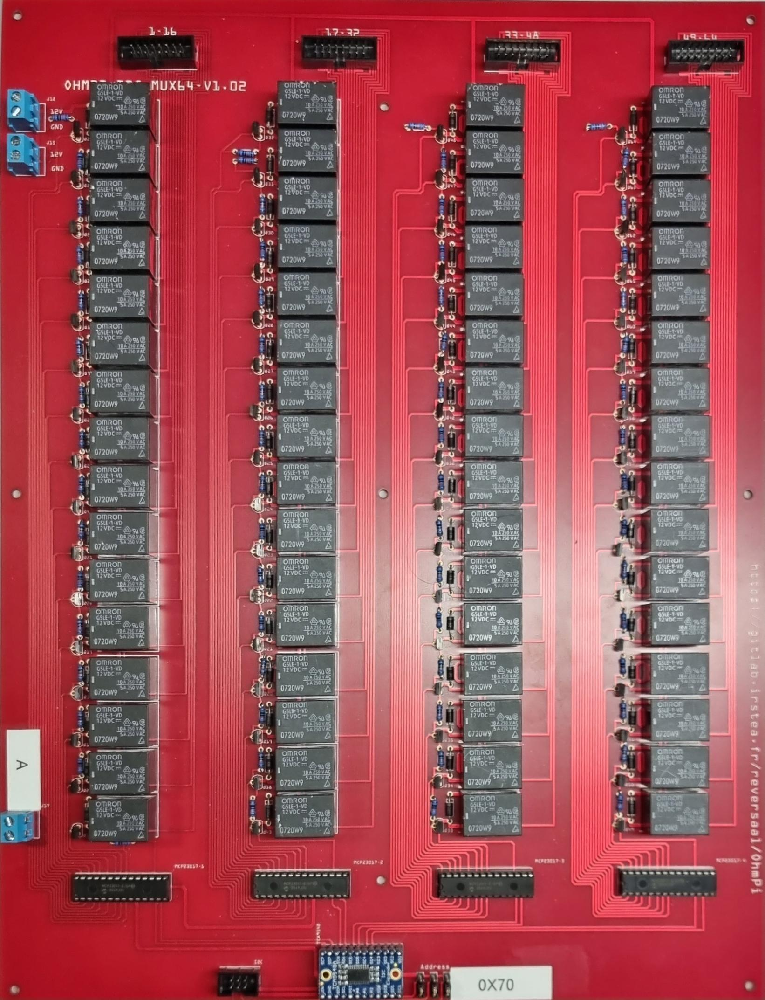

Warning
OhmPi is a participative project open to all, it requires skills in electronics and to respect the safety rules. OhmPi must be assembled in a professional context and by people competent in electronics. The OhmPi team cannot be held responsible for any material or human damage which would be associated with the use or the assembly of OHMPI. The OhmPi team cannot be held responsible if the equipment does not work after assembly.
MUX board v2023
The multiplexing of the channels is a mechanical multiplexing based on OMRON’s manufacturing relays (G5LE-1-VD 12 VDC). Each relay is combined with a ZVN4206A power MOFSET. The raspberry has only 30 GPIOs, which is not enough to activate all the 64 electrodes, which represent 512 GPIOs. We used gpio expander I2C (MCP23017). We have associated these components with an I2C multiplexer of type type TCA9548A from adafruit. This combination allows to go up to 512 GPIOs and up to 128 electrodes. Each card has its own digital address between 0X70 and 0X77. In the following presentation for an OhmPi 64 electrodes, we will use the addresses 0X70 for channel A, 0X71 for channel B, 0X72 for channel M and 0X73 for channel N. 0X73 for the N channel. 4 MUX board will be needed to multiplex an OhmPi 64 electrodes.
PART A Assembly of MUX board
Required components

Components |
Number |
Cost per unit |
Total cost |
Manufacturer |
Manufacturer s reference |
Web reference |
|
|---|---|---|---|---|---|---|---|
Printed circuit board |
4 |
140 |
560 |
Asler |
|||
Pin strip no ejector 16 pins |
16 |
0.62 |
9.92 |
BLK electronic |
10120550 |
||
diode-1n4007 |
256 |
0.091 |
23.296 |
Diodes Incorporated |
1N4007-T |
||
Pin strip no ejector 6 pins |
4 |
0.39 |
1.56 |
BLK electronic |
10120550 |
||
Dual screw terminal (5.08-mm pitch) |
12 |
0.648 |
7.776 |
CUI Devices |
TB009-508-02BE |
https://www.mouser.fr/ProductDetail/CUI-Devices/TB009-508-02BE?qs=vLWxofP3U2wCFk5uCkWTkA%3D%3D |
|
Generic male header - 3 pins |
12 |
0.205 |
2.46 |
TE Connectivity |
4-103321-5 |
https://www.mouser.fr/ProductDetail/TE-Connectivity/4-103321-5?qs=5TwgZeq9E7HSYLqaljJYrw%3D%3D |
|
MCP23017 I2C I/O Expander |
16 |
2.5 |
40 |
Adafruit |
732 |
https://www.mouser.fr/ProductDetail/Adafruit/732?qs=sGAEpiMZZMsKEdP9slC0Yfx16nYdMpXJueeOGoLBlDI%3D |
|
Omron G5LE-1-VD 12 VDC PCB relay 12 V DC 8 A 1 |
256 |
1.27 |
325.12 |
Omron |
G5LE-1-VD 12 VDC |
https://www.conrad.com/p/omron-g5le-1-vd-12-vdc-pcb-relay-12-v-dc-8-a-1-change-over-1-pcs-503811 |
|
ZVN4206A MOSFET-NCHANNEL |
256 |
0.471 |
120.576 |
Diodes Incorporated |
ZVN4206A |
||
100k Resistor |
256 |
0.061 |
15.616 |
Vishay / Beyschlag |
MBA02040C1003FRP00 |
||
Adafruit TCA9548A |
4 |
5.89 |
23.56 |
Adafruit |
2717 |
||
BKL Electronic 10120558 Pin strip no ejector Contact spacing: 2.54 mm Total number of pins: 16 No. of rows: 2 1 pc(s) |
16 |
0.51 |
8.16 |
BLK electronic |
10120558 |
||
BKL Electronic 10120862 Pin connector strain relief Contact spacing: 2.54 mm Total number of pins: 6 No. of rows: 2 1 |
16 |
0.84 |
13.44 |
BLK electronic |
10120862 |
||
BKL Electronic 10120158/10 Ribbon cable Contact spacing: 1.27 mm 16 x 0.08 mm Multi-coloured 10 m |
1 |
27 |
27 |
BLK electronic |
10120158/10 |
||
spacer 5.5 HEX 25 mm M3 male/female |
31 |
2.79 |
86.49 |
Keystone Electronics |
24300 |
https://www.mouser.fr/ProductDetail/Keystone-Electronics/24300?qs=UWqYQ%2F2cZWu0ejpOzmZC2A%3D%3D |
|
Screw |
9 |
0.305 |
2.745 |
APM HEXSEAL |
RM3X8MM-2701 |
https://www.mouser.fr/ProductDetail/APM-HEXSEAL/RM3X8MM-2701?qs=JJSE%2F12mKnS3VxSDrYXUHw%3D%3D |
|
spacer 5.5 HEX 25 mm M3 female/female |
9 |
0.846 |
7.614 |
Keystone Electronics |
25515 |
https://www.mouser.fr/ProductDetail/Keystone-Electronics/25515?qs=UWqYQ%2F2cZWuxuhUmfr%252BZuQ%3D%3D |
1 |

|
Mux board pcb |
2 |

|
Installation of the 100 kOhm resistors |
3 |

|
Installation of the MOSFET ZVN4206A |
4 |

|
Installation of the diode 1N4007 |
5 |

|
Installation of the relay |
6 |

|
Installation of the terminal screw |
7 |

|
Installation of generic male header |
8 |

|
Installation of Pin strip (6 pins) and pin strip (16 pins) |
9 |

|
Installation of DIP Dual In Line Socket 2*14 |
10 |

|
Installation of Adafruit TCA9548A |
10 |

|
Installation of MCP23017 |
Note
This step must be duplicated 4 times for every Mux card.
PART B MUX board address
To build an ohmpi it is necessary to have 4 MUX boards, with 4 different addresses. It is therefore necessary to identify each board, by assigning an address, which will be allocated in the OhmPi code. We present here the addresses selected by default.
For the A electrode board, we suggest addressing it with address 0x70:
1 |
 |
Mount the jumpers and note the value of the address and the electrode name on the mux board (A). |
|

|
|
Zoom on the jumper |
For the B electrode board, we suggest addressing it with address 0x71:
2 |

|
Mount the jumpers and note the value of the address and the electrode name on the mux board (B). |
|

|
|
Zoom on the jumper |
For the N electrode board, we suggest addressing it with address 0x72:
3 |

|
Mount the jumpers and note the value of the address and the electrode name on the mux board (B). |
|

|
|
Zoom on the jumper |
For the M electrode board, we suggest addressing it with address 0x73:
4 |

|
Mount the jumpers and note the value of the address and the electrode name on the mux board (B). |
|

|
|
Zoom on the jumper |